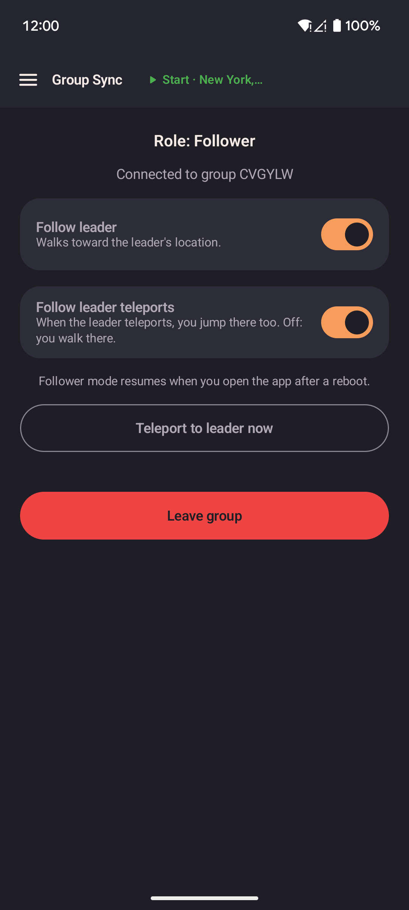

Group Sync
Share one location across several devices on the same Wi-Fi network. One device is the leader and sends its position. The other devices follow. No account is needed. See the privacy policy.

- One device creates the group and becomes the leader.
- Other devices join by scanning the QR code on the leader's screen. They can also type the 6-character join code next to it.
- Followers walk toward the leader. See Follower.
- Everything stays between the devices on your Wi-Fi network.
How it works
- On the leader, open Group Sync from the side menu and tap Create group: I'm the leader.
- A QR code and a short join code appear. Either one identifies the group.
- On each follower, open Group Sync. Scan the QR code or type the join code.
- The follower joins and starts following at once. Follow leader is on.
Leader
The leader sends its location to every follower once a second.
| Control | Description |
|---|---|
| QR code | Shows the join invite and the join code as text. Tap the refresh icon for a new QR code. The join code stays the same. |
| Sharing toggle | When on, the leader sends its position. Turn it off to pause sharing and stay in the group. |
| Control API toggle | Off by default. When on, it shows the address and key that other apps on your Wi-Fi need to control this device. Regenerate key makes the old key stop working. It turns itself off when you leave the group or restart the app. Developers: see the Control API reference. |
| Leave group | Removes this device from the group. Followers lose the connection and stop getting updates. |
Follower
A follower does not jump to the leader's position. It walks there at the leader's speed. While the leader stands still, it uses the speed set on that device: Slow Walk, Walk, Run, Bike, or Drive. If the follower starts far away, catching up can take a while. If the leader keeps moving, the follower may never fully catch up. This is on purpose, so the movement looks like a real walk.
If the leader stops sharing and later starts again, followers pause and then jump to the leader's new location.
| Control | Description |
|---|---|
| Follow leader toggle | On by default when you join. When on, the device walks toward the leader. Turn it off to pause following and stay in the group. Moving the joystick also turns it off. |
| Follow leader teleports toggle | On by default. When the leader teleports, or stops and restarts somewhere new, your device jumps there too. Turn it off to walk there instead. Hidden when teleport features are hidden in Settings. Your device then always walks. |
| Teleport to leader now | Jumps to the leader's last known position at once. Shown while Follow leader is on. A badge next to it shows the suggested wait before you jump. If the app does not know the leader's position yet, it asks you to try again in a moment. |
| Leave group | Disconnects from the leader and clears the saved connection. |
Persistence
The app saves a follower's connection. If Follow leader was on when you closed the app, following restarts when you open it again, even after a restart of the phone.
The app also saves a leader's role. The group starts again when you open the app. You do not need to tap Create group again.
Requirements
- All devices must be on the same Wi-Fi network.
- Set up mock location on each device. A follower uses the position it receives as its fake location.
- No extra permissions are needed.
Limitations
- Mobile data or a VPN can stop a device from reaching the leader.
- After the leader restarts the app, its network address can change. Followers then try to reconnect for a short time. If that fails, rejoin with a new QR code or the join code.
- Some phone hotspots block the join code from finding the leader. Scan the QR code instead.
- A leader can run only one group at a time.
- Later leader teleports carry followers along unless Follow leader teleports is off. Use Teleport to leader now to jump at once.